MontaCast
MontaCast Automatisch opstarten
Het is van belang dat een MontaCast device automatisch opstart na een stroomonderbreking Hoe dit ingesteld kan worden lees je op: https://vragen.monta.nl/Docs/Operations/Werkstations/Productie-machines/Automatisch-opstarten-Intel-Celeron-na-stroomwegval/
MontaCast installeren
Ga naar http://software.montapacking.nl/montacast/montacast_x64.msix om de nieuwste versie van MontaCast te downloaden. De download start automatisch:
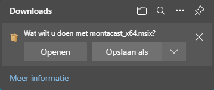
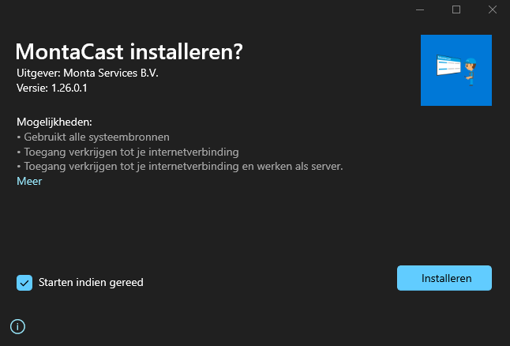
Om het laatste versienummer te checken:
https://software.montapacking.nl/montacast/version.txt
Om de releasedatum van de laatste versie te checken:
https://software.montapacking.nl/montacast/releasedate.txt
Eerste start
Buiten MontaVPN (bijvoorbeeld bij MontaWMS klant)
Wanneer de app voor het eerst wordt gestart op een netwerk buiten het MontaVPN, dient er ingelogd te worden met een geldige badge op het inlogscherm. Het inlogscherm ziet er zo uit:
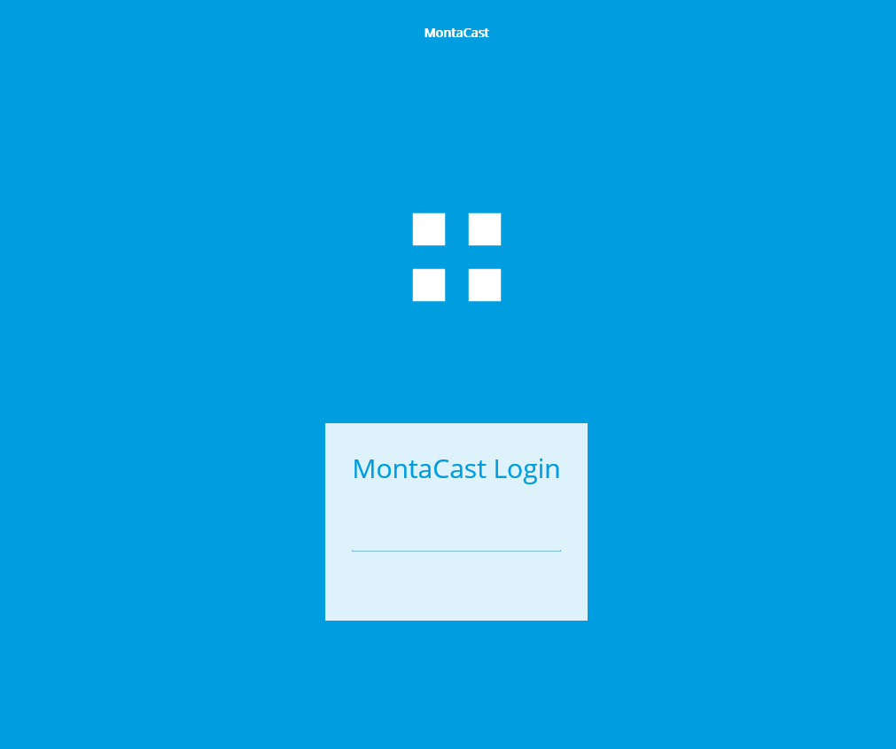
Wanneer er is ingelogd, wordt er een token opgeslagen op het device. Het inloggen hoeft dus maar één keer gedaan te worden per device, tenzij de badge weer wordt verwijderd van het device. Na de eerste keer inloggen met badge is het nodig dat binnen gomonta de Internal Rest Credentials worden goedgekeurd. Vaak wordt dat gedaan door ServiceDesk.

Badge token verwijderen
De token kan ook weer verwijderd worden. Dit wordt gedaan door met de muis in de hoek linksboven het scherm te klikken (op een onzichtbare knop). Daarna wordt er een popup getoond:
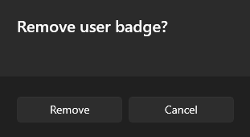
Als er op ‘Remove’ wordt geklikt wordt de token verwijderd:
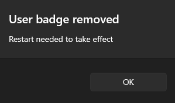
Dit heeft echter pas effect wanneer de app opnieuw wordt opgestart. Wanneer het device zich dan weer buiten een MontaVPN bevindt, moet er opnieuw ingelogd worden met een geldige badge.
Binnen MontaVPN of na registreren met badge
Wanneer het programma voor het eerst op een device wordt gestart, registreert het device zichzelf in de database als MontaCast device. De device haalt zijn informatie op, zoals in welk warehouse deze zich bevindt, op basis van het IP-adres van het device. Op dit moment heeft het device nog geen schermen ingesteld, dus wordt er een wit scherm met een melding getoond:

GoMonta Admin Dashboard
Navigeer naar https://gomonta.montapacking.nl/Admin/MontaCast Op deze pagina zijn per vestiging alle MontaCast devices te zien, met bijbehorend UniqueDeviceId (die te zien is op het witte scherm in de melding). Zoek deze in de lijst en klik op de naam van het device.
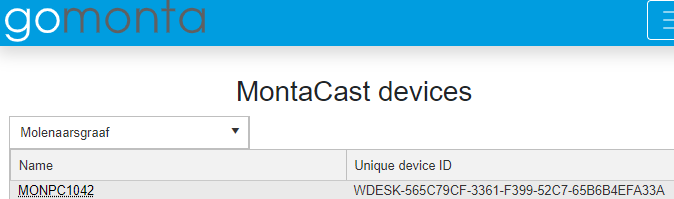
Op deze pagina worden meer details getoond over het device, waaronder het Embedded Device ID en welke schermen er zijn ingesteld. Omdat het nu om een nieuw device gaat zal de tabel leeg zijn.
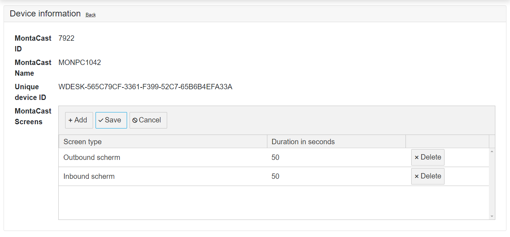
Ook is onderaan de pagina de laatste screenshot te zien, samen met hoe lang geleden deze screenshot is gemaakt. Hieraan is te zien of het device nog juist werkt. MontaCast maakt iedere minuut een screenshot.
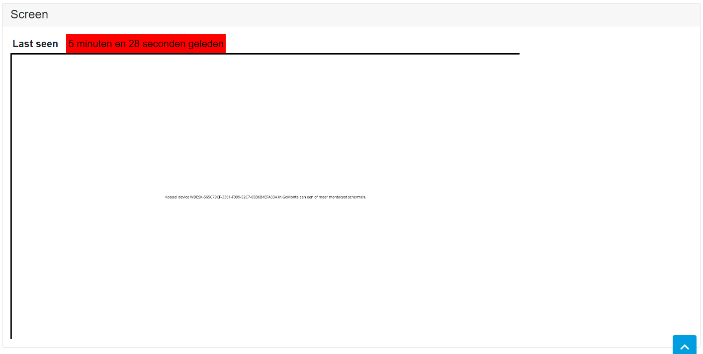
Schermen toevoegen
Om schermen toe te voegen dient er op de ‘Add’ knop gedrukt te worden. Nu wordt er een nieuwe rij toegevoegd in de tabel, en er kan bij ‘Screen type’ een schermsoort gekozen worden. Bij duration in seconds vult men de tijd in dat het scherm wordt weergegeven in het geval dat er meerdere schermen zijn ingesteld. In het volgende voorbeeld worden er twee schermen toegevoegd, inbound en outbound. Beiden hebben een tijdsduur van 50 seconden:
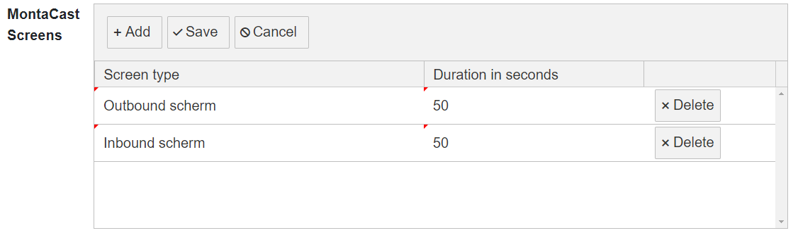
Als je klaar bent met schermen toevoegen, klik je op ‘Save’, en de schermen worden toegevoegd aan de database. Als de pagina ververst wordt staan de nieuwe schermen in de tabel. Als er een fout gemaakt is kan er op ‘Cancel’ geklikt worden. Dan worden alle nieuwe, niet opgeslagen schermen verwijderd. Wanneer er op de ‘Delete’ knop wordt gedrukt, wordt het scherm verwijderd uit de database. Nu heeft de MontaCast dus twee schermen ingesteld. Wanneer het MontaCast programma opnieuw wordt opgestart zullen de nieuwe schermen worden getoond, met ingestelde tijdsduur. Wanneer de admin-pagina weer wordt bekeken, is er een screenshot te zien van het device, die een van de gekozen screens zou moeten tonen:
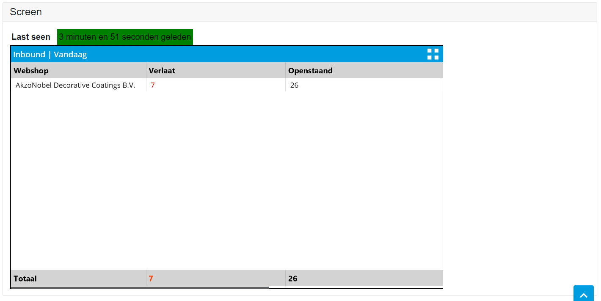
MontaCast Office Dashboard
Op de MontaCast Office Pagina op GoMonta wordt per vestiging in één oogopslag van alle MontaCast devices het laatst genomen screenshot getoond, samen met hoe lang geleden dit was. https://gomonta.montapacking.nl/Office/MontaCast

Aandachtspunten bij plaatsen intel celeron nuc voor montacast
- automatisch starten op vast tijdstip, zie automatisch starten op vast tijdstip
- automatisch starten bij stroomuitval instellen, zie automatisch starten bij stroomuitval
- beeldscherm percentage goed zetten, zodat dashboards er goed uitzien, zie Schaal en Layout
- intel celeron nuc in teamviewer goed zetten qua naamgeving, zie Teamviewer
Intel celeron nuc in teamviewer goedzetten qua naamgeving
Graag als een MONPC... is ingezet als montacast, deze qua naamgeving als volgt in teamviewer zetten; 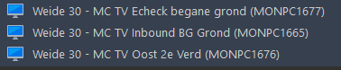
{Magazijn}-MC TV {Naam afdeling en verdieping nummer} - {(MONPC...)}
En het is mooi de intel celeron nuc ook gelijk onder het juiste magazijn te hangen in teamviewer.
Schaal en layout percentage goed zetten
Afhankelijk van de gebruikte TV zien de dashboards er vaak wat vreemd uit qua layout. 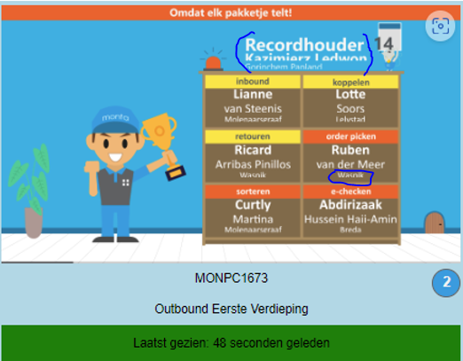
Dit kan je aanpassen door de schaal aan te passen. Bij grote schermen zet Windows deze standaard op 300%, en dit moet dan bijv 200% zijn om goed beeld te krijgen. Dit kan je vinden bij Beeldscherminstellingen
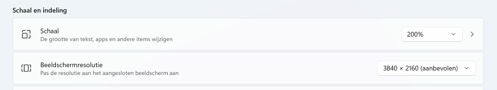